FastAPI · JavaScript · Playwright
Human-in-the-Loop Web Testing Assistant
I built the dashboard where testers select page elements, review the locator evidence, and ask for a testing suggestion based on their selection.
View my dashboard branchComputer & Communication Engineering student at Cairo University, building Flutter apps, embedded firmware, and testing tools.
FastAPI · JavaScript · Playwright
I built the dashboard where testers select page elements, review the locator evidence, and ask for a testing suggestion based on their selection.
View my dashboard branch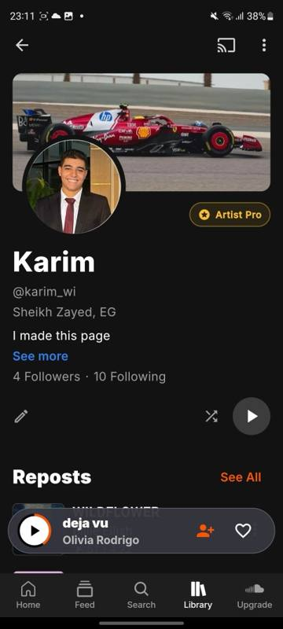

Flutter · Riverpod · REST API
I built the authentication, profile, and library modules for a team-built music streaming app on Android and Windows.
I’m a senior Computer & Communication Engineering student at Cairo University. I like software that is secure, systems that sit close to the hardware, and apps people enjoy using. By day I build with Flutter, cryptography and C++. By weekend I’m watching Formula 1, or explaining a hard maths idea until it clicks.
C, C++, VHDL, Assembly, Arduino. A 6-stage pipelined CPU, firmware for racing ECUs.
Flutter, Dart, Riverpod, REST APIs, JWT & OAuth, C#, Java, SQL, Python and Flask.
AES-GCM, ElGamal, Diffie-Hellman, DevSecOps, Linux and VMware. Macquarie Cyber Security: DevOps Specialization (Oct 2026).
IBM AI Fundamentals, Google Intro to Generative AI, IEEE EMBS Data Analysis and AI.
I follow Formula 1 closely. Since October 2026 I’ve been on the Cairo University racing team’s Formula Student programme as an Embedded Systems Engineer, writing and testing C/C++ firmware for vehicle ECUs and data-acquisition systems.
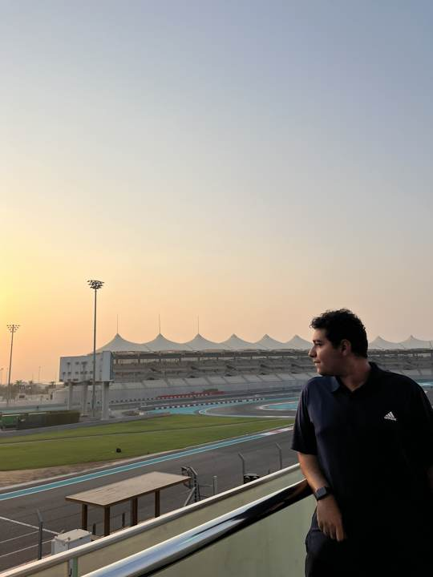
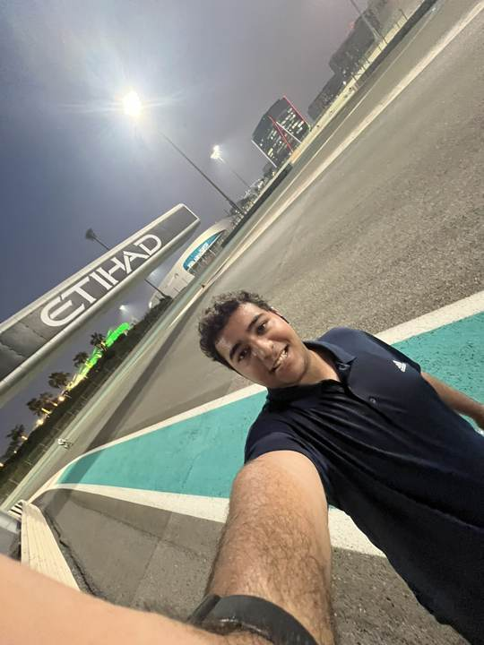
My role covers the embedded firmware and data acquisition. Here’s where that work fits in a typical telemetry system.
Since June 2024 I’ve been an IGCSE Mathematics teaching assistant and tutor. I break hard problems into step-by-step methods, build targeted practice, and coach exam technique, time management and which questions to attempt first.
I also build tools for it: a report-card generator that turns a 3-hour manual job into a 30-second flow for 265 students.
Report generator repo Ask about tutoringResults from students, in their own words
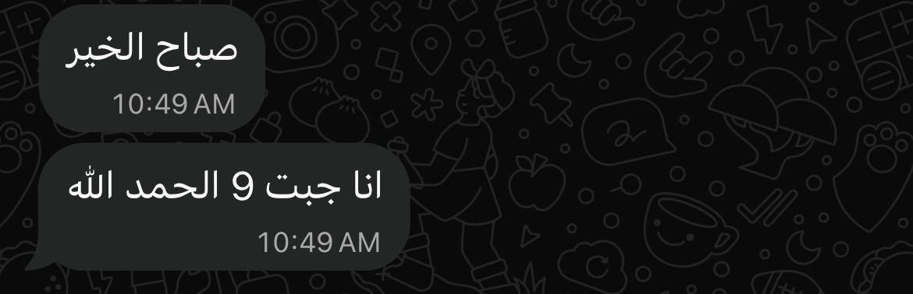
Rythmify is a SoundCloud-inspired streaming app written in Flutter, with Riverpod and Dio talking to an Azure-hosted REST API. It runs on Android and Windows desktop.
Auth, which I built. JWT with refresh-token rotation, Google OAuth, silent retry on a 401, and a full password-reset flow.
Profile, which I built. Avatar and cover uploads, privacy toggles and follower counts, all through the REST API.
Library, which I built. Reposts and playlists in one place.
And the listening view, with a waveform and comments that pin to the track.
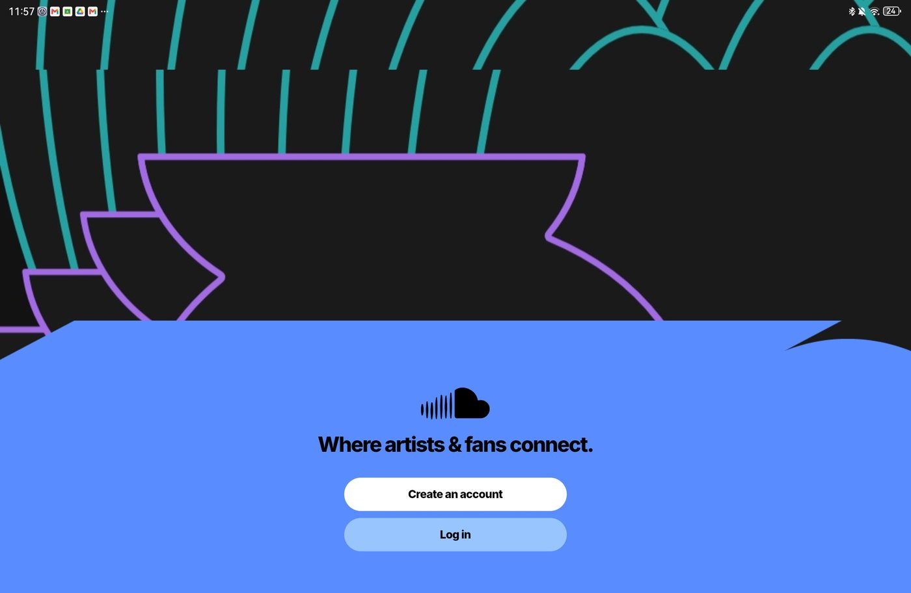
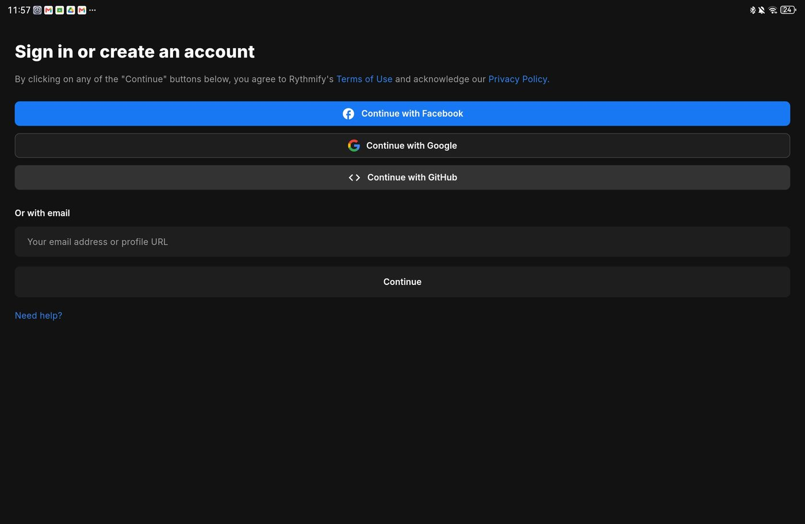
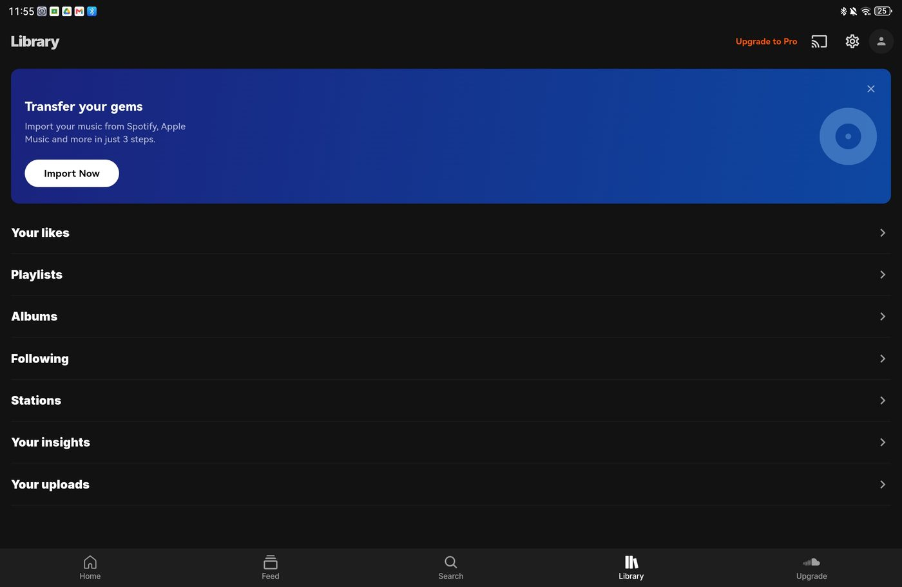
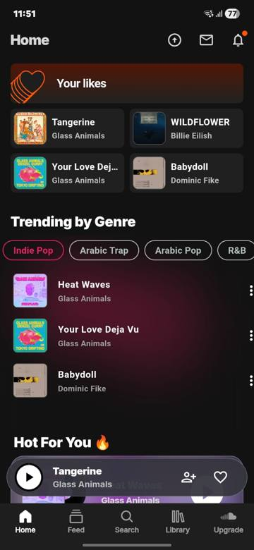
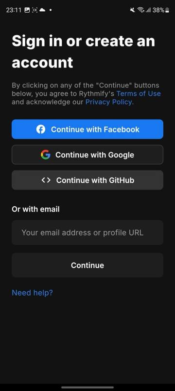
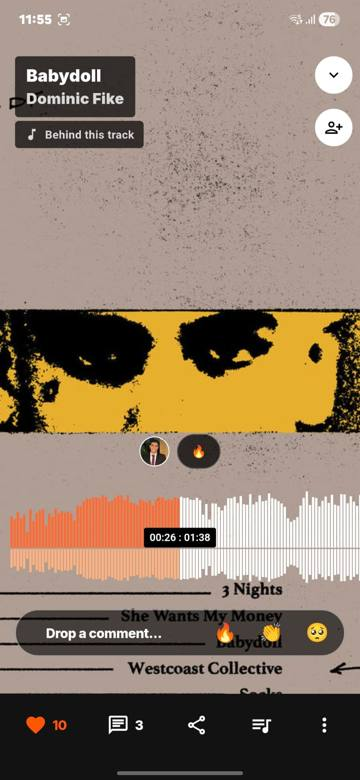
Python · AES-256-GCM · ElGamal · Diffie-Hellman · Streamlit · May 2026
Vault encrypted with AES-256-GCM, with only a SHA-256 hash of the master password kept. ElGamal signatures, written from scratch, block tampered vault files. Diffie-Hellman with ephemeral session keys secures transfers between users. There is both a CLI and a Streamlit UI.
Runs custom assembly with interrupt handling and hazard prevention. A structural memory hazard was solved with split-cycle timing (write on the rising edge, read on the falling edge), which removed the stalls.
C# · SQL Server · Dec 2025
A transit database of 15 tables and 4 user roles, with a WinForms MVC app for booking, payments, incident reports and analytics.
Java · sockets · May 2025
Real-time shared editing using CRDTs for conflict-free merging and eventual consistency.
Flask · ReportLab · Railway · Apr 2026
Per-student PDFs that match the official template, from CSV in seconds. Repository
C · Mar 2025
SRTF and Round Robin with dynamic ready queues, context switching and performance metrics.
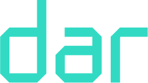
My first stint inside a large engineering organisation, working on the infrastructure side of IT.
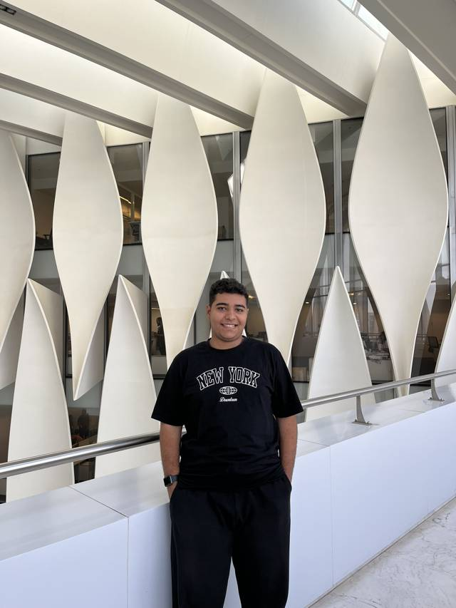
Open a certificate to enlarge it. Verification links go to the issuer.
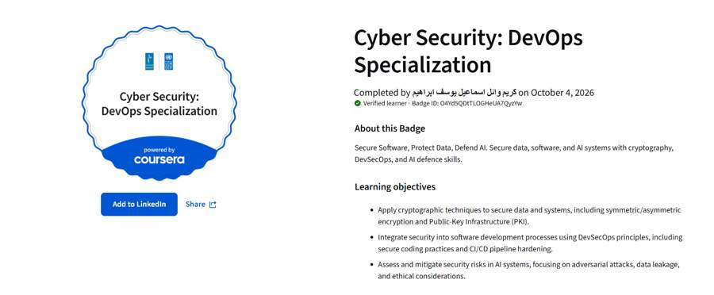
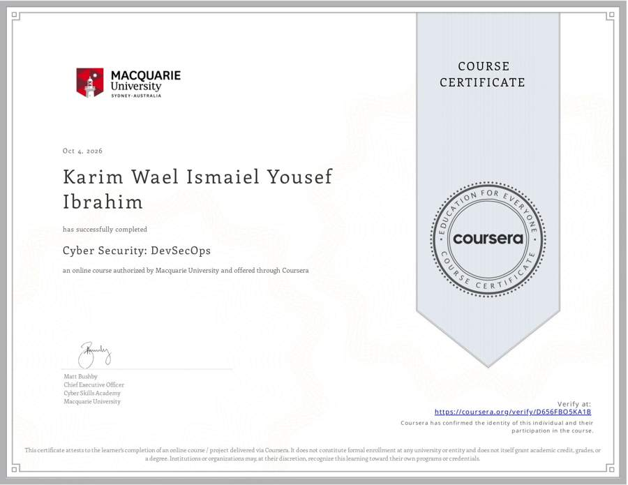
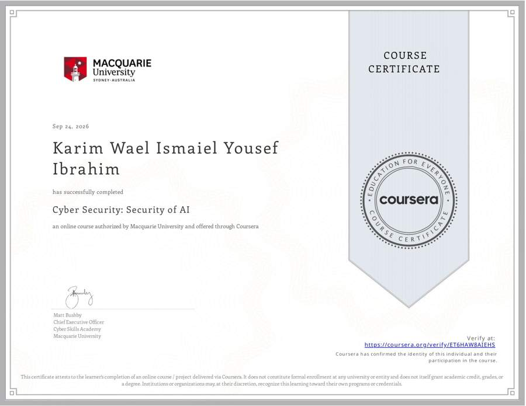
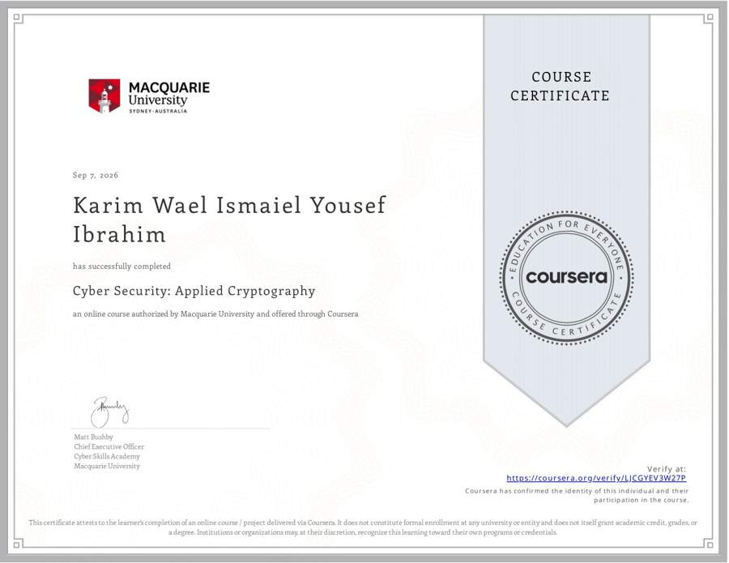
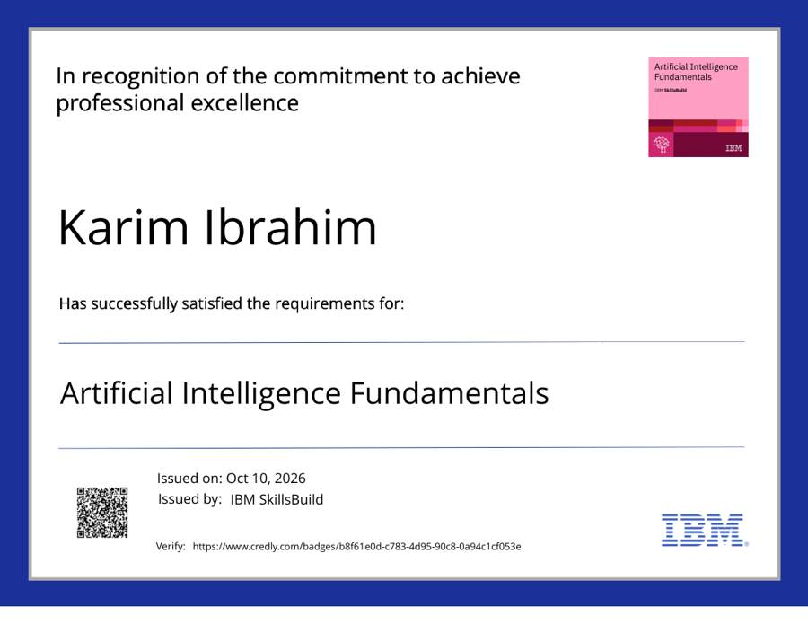
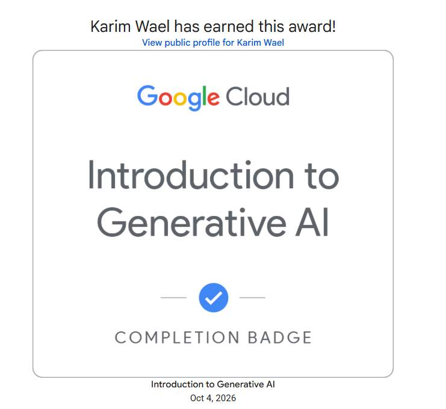
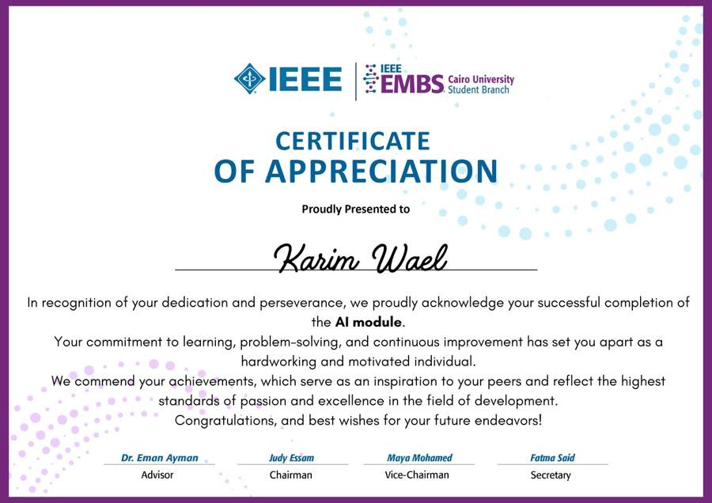